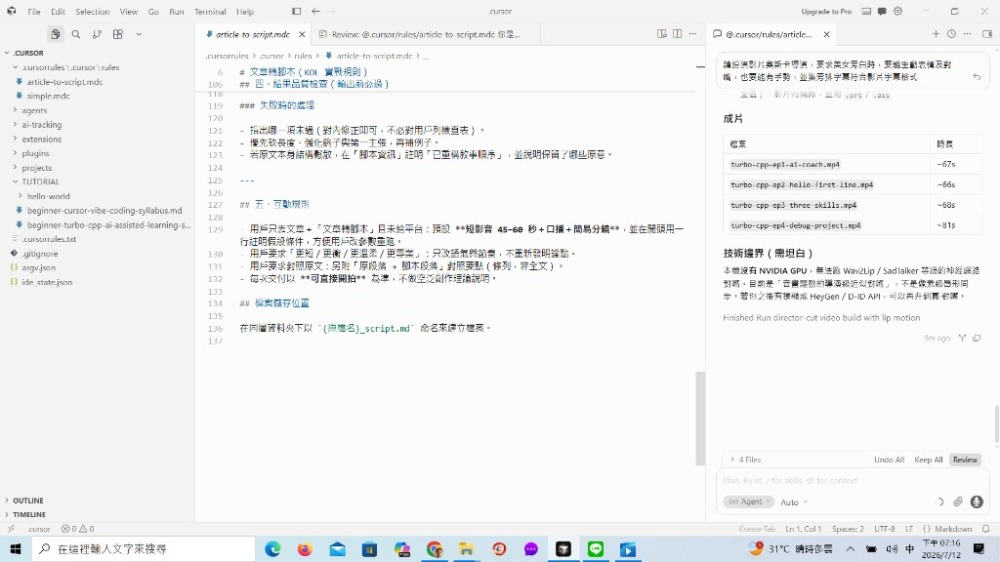
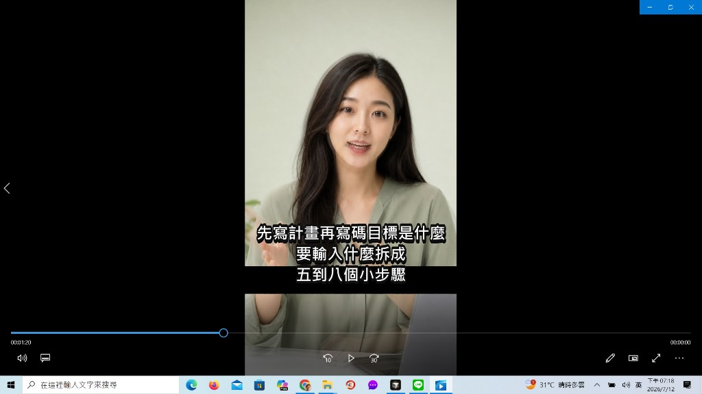

20260712 文章轉腳本，生成AI美女教學視頻
依 Cursor 規則把 Turbo C++ 課程大綱轉成四集短影音腳本，並生成 AI 美女旁白教學影片。以下為本次成果截圖。
成果一｜Cursor 工作區與成片清單

成果二｜AI 美女旁白短影音畫面

成片檔案
turbo-cpp-ep1-ai-coach.mp4turbo-cpp-ep2-hello-first-line.mp4turbo-cpp-ep3-three-skills.mp4turbo-cpp-ep4-debug-project.mp4
完整影片資料夾：C:\Users\shaej\turbo-cpp-short-videos\